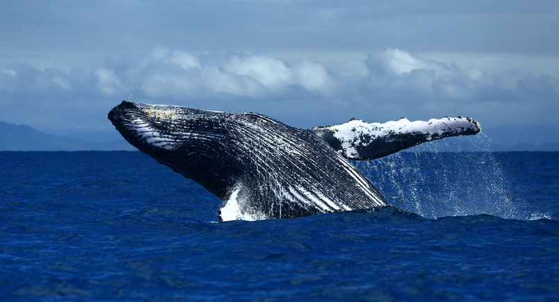

Ballena azul
(Balaenoptera musculus)
La Ballena azul puede ser residente de algún lugar o migratoria. Se reproduce y alumbra en agua tropicales y sub tropicales durante los meses de invierno y
se alimenta en aguas polares durante los meses de verano.
La población de ballena azul del hemisferio norte migra a aguas del Ártico para alimentarse.
Las ballenas azules, presentes en todos los océanos del mundo, suelen vivir en solitario o en parejas, aunque ocasionalmente se las puede ver en pequeños grupos.
Suelen pasar el verano alimentándose en aguas polares, para llevar a cabo prolongadas migraciones hacia el ecuador conforme llega el invierno.

- Es el animal más grande del planeta
- Llega a pesar hasta 400,000 libras (180 toneladas)
- Miden unos 98 pies (29 m) de largo
- Su corazón es del tamaño de un automóvil pequeño
- Durante la temporada principal de alimentación puede consumir alrededor de 7,936 libras (3,600 kg) de krill por día.
MENU PRINCIPAL